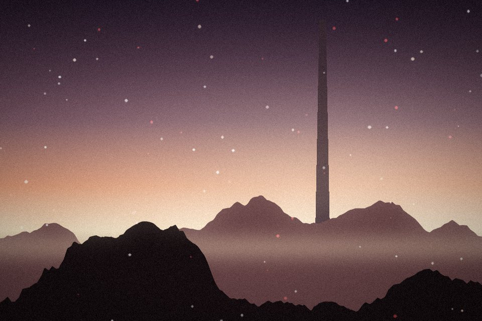
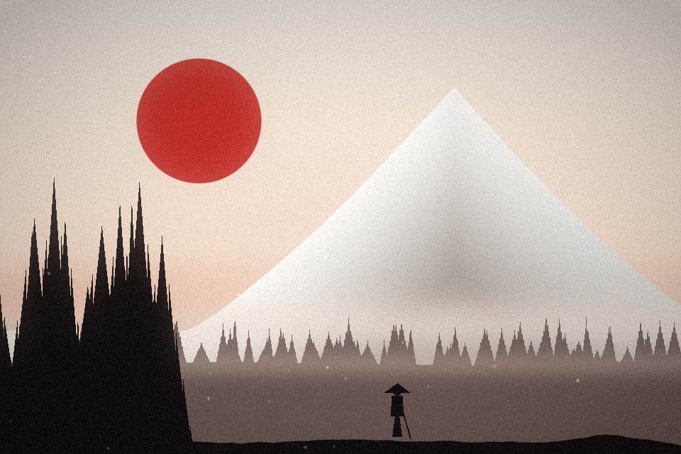

Alan Wake 2 — Spoilersız İnceleme: Yılın en iyi korku oyunu mu?
215 B görüntülenme · 2 gün önce · #İnceleme
GR
GameReviewTR184 B takipçi
Bu video şu oyunla ilgili
Alan Wake 2Korku · Remedy Entertainment₺599-%40EEpic
Oyunu GörYorumlar 842
S
Müzikli bölümün spoilersız anlatılması çok iyi olmuş. İncelemeye katılıyorum, ses tasarımı ayrı bir karakter gibi.
Sıradaki
Otomatik oynat22:05
Alan Wake 2: Tüm el yazması sayfaları nerede?
Level Up TR · 61 B görüntülenme

14:32Expedition 33 incelemesi: Yılın sürprizi mi?
GameReviewTR · 184 B görüntülenme

2:48Ghost of Yōtei — Hikâye fragmanı (Türkçe altyazılı)
Gamerisen Fragman · 412 B görüntülenme
 27:40
27:40Silksong: Son boss’a kadar en iyi rota
PixelNur · 38 B görüntülenme